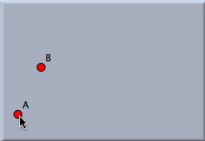
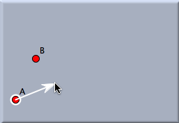
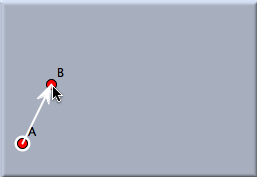
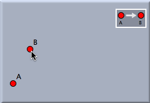
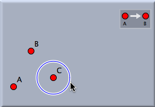
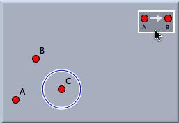
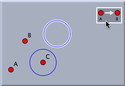
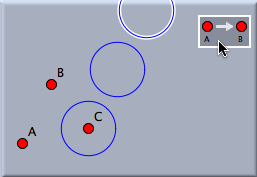

変換の一般的な使い方
変換の使い方を、簡単な平行移動を例に説明していきます。変換の生成は次の二段階で成り立っています。:
- まず、変換は適切な変換モードにより定義される必要があります。
- 次に、一度変換が定義される、任意の幾何学的なオブジェクトに適用されます。
動かすモードで動かしている間、変換のは変換されたオブジェクトが動くに応じて最新のものに変えられます。
変換の定義
一般的な幾何学モードでは、どのように変換を定義するかはあなたが定義したい変換のタイプに依存します。平行移動は
Aと
Bという二つの点をクリックすることで定義されます。この平行移動は
Aから
Bへと動く幾何学的な移動に相当します。
例に沿って考えていきましょう。:すでに
Aと
Bという点は描かれているものと想定します。平行移動を定義するためには変換のメニューから平行移動モードを選択する必要があります。点
Aをクリックした後、平行移動を作図するための視覚的なヒントとして矢印が現れます。その後、点
Bをクリックして下さい。すると、小さい長方形の
ビューボタンが現れます。これは、さらに平行移動を行うためのボタンです。
 | |
 | |
 | |
 |
始点の選択:
始点となる点を
選択します。 | |
マウスを動かす:
ヒントとなる矢印が
現れます。 | |
次の点に移る:
矢印が手伝ってくれます。
| |
終点の選択:
これで変換が作られました。 |
ビューボタンは変換を表すもので、一般的な幾何学モードのボタンと同じように動作します。そのボタンを押すことで、現在選択されている要素にその変換を作用させることができます。
変換の利用
変換を定義した後、その変換を使うことができます。そのためには
動かすモードという、選択モードとしても使われるモードへ移る必要があります。では、ひとつまたはいくつかの要素をクリックして選んだとします。もし、同時に多くの選択をしたいのなら、Shiftキーを押したままにしなくてはいけません。平行移動によって描きたい要素を選択した後、ただ自分の使いたい変換のビューボタンを押せばよいのです。この方法で変換された要素が作られます。それらは自動的にもとの図形と同じ外見を持ちます。その上、それらは自動的に選択された状態になっているので、簡単にそれらをもう一度変換させることができます。
 | |
 | |
 | |
 |
もとの図形を選ぶ:
この動作は動かすモードで
行う必要があります | |
マウスを動かす:
変換ボタン上にくると
ハイライトします。 | |
変換をクリックする:
変換された図形が
表示されます | |
もう一度クリックする
さらに変換された図形が
表示されます。 |
変換のパラメータを変更する
変換は動的なオブジェクトです。 もしももとの図形の位置が変わると、変換された要素もそれに従って更新されます。もしもこの例で、 点
A や点
B が移動されると、変換された円も同じように動いていきます。
変換の選択
時々、変換を
選択することが必要となってきます。これは動かすモードでも行うことができます。しかしながら、変換を選択するには、クリックするときにShiftキーを押しておかなければなりません。選択された変換は
変換群 や
反復関数系での入力パラメータとして使われます。
See also
(横山)